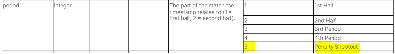
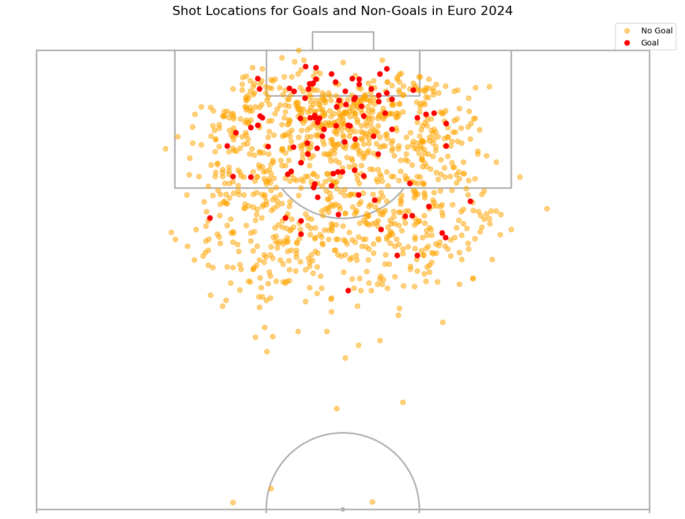
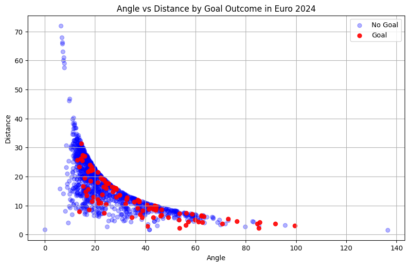
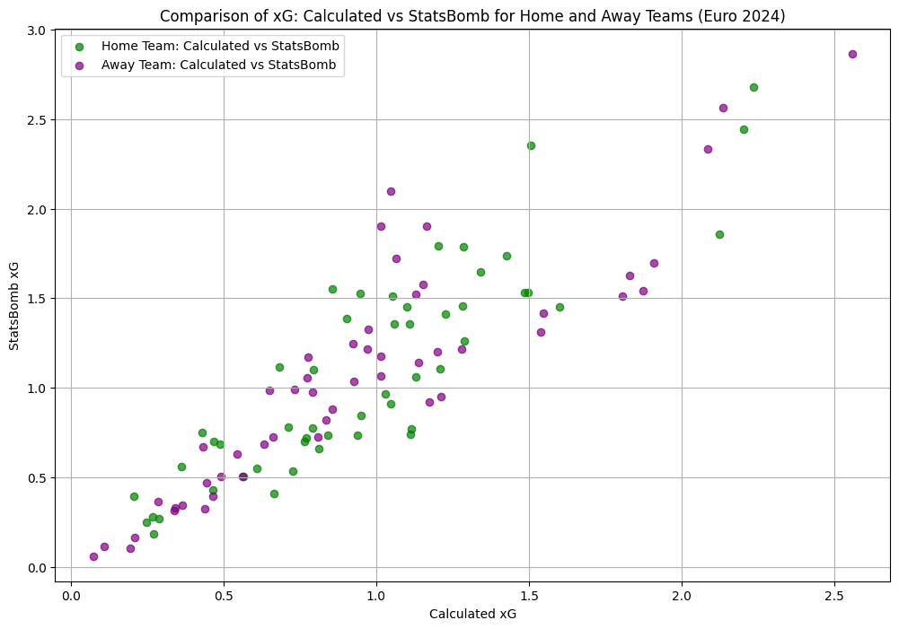

import pandas as pd
import numpy as np
import math
from mplsoccer import VerticalPitch, Sbopen
from sklearn.linear_model import LogisticRegression
import matplotlib.pyplot as pltGiriş
Futbol dünyasında performans analizi her geçen gün daha da önem kazanıyor ve takımın ve oyuncuların potansiyelini daha iyi anlamak ve geliştirmek için kritik bir rol oynuyor. Bu bağlamda, Beklenen Gol veya kısaca xG (Expected Goals) metriği, son yıllarda futbol analizlerinde sıklıkla kullanılan bir araç haline gelmiştir. Bu yazıda, lojistik regresyon ile basit bir model kurarak hesapladığımız xG’leri StatsBomb ile karşılaştıracağız.
Kullanılacak Kütüphaneler
Basit xG Modelinin Oluşturulması
xG Tanımı
Benzer özelliklere sahip şutların tarihsel bilgilerine dayanarak, xG modeli her şuta 0 ile 1 arasında bir değer atar ve bu değer şutun gol üretme olasılığını ifade eder. Örneğin, 0.2 xG, bir şutun gol olma olasılığının %20 olduğunu ifade eder. xG’nin yüksek olması, bir oyuncunun veya takımın gol atma fırsatlarının iyi olduğunu gösterir.
Verilerin Çekilmesi
StatsBomb’dan verileri aşağıdaki gibi çekebiliriz. Euro 2024’ün competition_id’si 55, season_id’si 282’dir. Detaylı bilgiye buradan ulaşabilirsiniz.
parser = Sbopen()
euro2024_matches = parser.match(competition_id=55, season_id=282)df = {}
for match_id in euro2024_matches['match_id']:
event_data, related_data, freeze_data, tactic_data = parser.event(match_id)
df[match_id] = {
'event': event_data,
'related': related_data,
'freeze': freeze_data,
'tactic': tactic_data
}Yukarıdaki kod ile Euro 2024 maçlarının verilerini çektik ve maç ID’lerine göre df adlı sözlükte sakladık.
df_shot = pd.DataFrame(columns=['x', 'y', 'outcome_name', 'shot_statsbomb_xg'])
for match_id, match_data in df.items():
event_df = match_data['event']
mask_shot = (
(event_df['type_name'] == 'Shot') &
(event_df['period'] <= 4) &
(event_df['sub_type_name'] == 'Open Play')
)
shots_temp = event_df.loc[mask_shot, ['x', 'y', 'outcome_name', 'shot_statsbomb_xg']]
df_shot = pd.concat([df_shot, shots_temp], ignore_index=True)Yukarıdaki kod ile Euro 2024 maçlarından sadece “open play” içindeki şut verilerini çektik ve bu verileri df_shot adlı bir veri çerçevesinde topladık. Open play, oyunun durmadığını, serbest ve sürekli akışta olduğunu ifade eder. Ayrıca, penaltı atışlarını dikkate almamak için 4’ten küçük olanları aldık.

Genel olarak dokümantasyonlara buradan ulaşabilirsiniz.
Gol Olan ve Olmayan Şutların Konumlarının Gösterilmesi
df_goals = df_shot[df_shot['outcome_name'] == 'Goal'].copy()
df_non_goals = df_shot[df_shot['outcome_name'] != 'Goal'].copy()
pitch = VerticalPitch(
pad_bottom=0.5,
half=True,
goal_type='box'
)
fig, ax = pitch.draw(figsize=(12, 10))
pitch.scatter(
df_non_goals['x'], df_non_goals['y'],
c='orange',
marker='o',
ax=ax,
label='No Goal',
alpha=.5
)
pitch.scatter(
df_goals['x'], df_goals['y'],
c='red',
marker='o',
ax=ax,
label='Goal'
)
ax.set_title("Shot Locations for Goals and Non-Goals in Euro 2024", fontsize=16)
ax.legend(loc='upper right')
plt.show()
Açı ve Uzaklığın Hesaplanması
Belirtilen noktadan iki kale direği arasındaki açıyı ve hedefin (kale direği) en yakın mesafesini hesaplayalım.
Ölçüler aşağıda verilmiştir.


def calculate_angle(x, y):
g0, g1, p = np.array([120, 44]), np.array([120, 36]), np.array([x, y])
v0, v1 = g0 - p, g1 - p
angle = np.arctan2(np.linalg.det([v0, v1]), np.dot(v0, v1))
return abs(np.degrees(angle))
def calculate_distance(x, y):
x_dist = 120 - x
y_dist = 0
if y < 36:
y_dist = 36 - y
elif y > 44:
y_dist = y - 44
return math.sqrt(x_dist**2 + y_dist**2)
df_shot['angle'] = df_shot.apply(lambda row:calculate_angle(row['x'], row['y']), axis=1)
df_shot['distance'] = df_shot.apply(lambda row:calculate_distance(row['x'], row['y']), axis=1)
df_shot['goal'] = df_shot.apply(lambda row:1 if row['outcome_name'] == 'Goal' else 0, axis=1)Açı ve Uzaklığa Göre Gol ve Gol Olmayan Durumların Gösterilmesi
plt.figure(figsize=(10, 6))
plt.scatter(
df_shot[df_shot['goal'] == 0]['angle'],
df_shot[df_shot['goal'] == 0]['distance'],
color='blue',
label='No Goal',
alpha=0.3
)
plt.scatter(
df_shot[df_shot['goal'] == 1]['angle'],
df_shot[df_shot['goal'] == 1]['distance'],
color='red',
label='Goal',
alpha=0.9
)
plt.xlabel('Angle')
plt.ylabel('Distance')
plt.title('Angle vs Distance by Goal Outcome in Euro 2024')
plt.legend()
plt.grid(True)
plt.show()
Modelin Kurulması
X = df_shot[['angle', 'distance']]
y = df_shot['goal']
model = LogisticRegression().fit(X, y)xG Hesaplayacak Fonksiyonun Yazılması
def calculate_xg(x, y):
angle = calculate_angle(x, y)
distance = calculate_distance(x, y)
xg = model.predict_proba([[angle, distance]])[:, 1][0]
return xgMaçların xG Değerlerinin Tahmin Edilmesi
Bir takımın xG’si tüm xG’lerin toplamıdır.
\(xG = \sum_{i=1}^{n} xG_i\)
df_summary = euro2024_matches[['match_id', 'home_team_name', 'away_team_name']].copy()
df_summary['home_goals_open_play'] = None
df_summary['home_xg_open_play'] = None
df_summary['home_xg_sb_open_play'] = None
df_summary['away_goals_open_play'] = None
df_summary['away_xg_open_play'] = None
df_summary['away_xg_sb_open_play'] = None
for i, match_id in enumerate(euro2024_matches['match_id']):
df_shots = df[match_id]['event']
shot_mask = (df_shots['type_name'] == 'Shot') & (df_shots['period'] <= 4) & (df_shots['sub_type_name'] == 'Open Play')
df_shots = df_shots[shot_mask].copy()
df_shots['calculated_xg'] = df_shots.apply(lambda row: calculate_xg(row['x'], row['y']), axis=1)
home_team = euro2024_matches['home_team_name'][i]
away_team = euro2024_matches['away_team_name'][i]
df_home = df_shots[df_shots['team_name'] == home_team].copy()
df_summary.at[i, 'home_goals_open_play'] = len(df_home[df_home['outcome_name'] == 'Goal'])
df_summary.at[i, 'home_xg_open_play'] = df_home['calculated_xg'].sum()
df_summary.at[i, 'home_xg_sb_open_play'] = df_home['shot_statsbomb_xg'].sum()
df_away = df_shots[df_shots['team_name'] == away_team].copy()
df_summary.at[i, 'away_goals_open_play'] = len(df_away[df_away['outcome_name'] == 'Goal'])
df_summary.at[i, 'away_xg_open_play'] = df_away['calculated_xg'].sum()
df_summary.at[i, 'away_xg_sb_open_play'] = df_away['shot_statsbomb_xg'].sum()Tahmin Sonuçlarının StatsBomb ile Karşılaştırılması
plt.figure(figsize=(12, 8))
plt.scatter(
df_summary['home_xg_open_play'],
df_summary['home_xg_sb_open_play'],
alpha=0.7, color='green',
label='Home Team: Calculated vs StatsBomb'
)
plt.scatter(
df_summary['away_xg_open_play'],
df_summary['away_xg_sb_open_play'],
alpha=0.7, color='purple',
label='Away Team: Calculated vs StatsBomb'
)
plt.xlabel('Calculated xG')
plt.ylabel('StatsBomb xG')
plt.title('Comparison of xG: Calculated vs StatsBomb for Home and Away Teams (Euro 2024)')
plt.legend()
plt.grid(True)
plt.show()
Gelecek içeriklerde görüşmek dileğiyle.